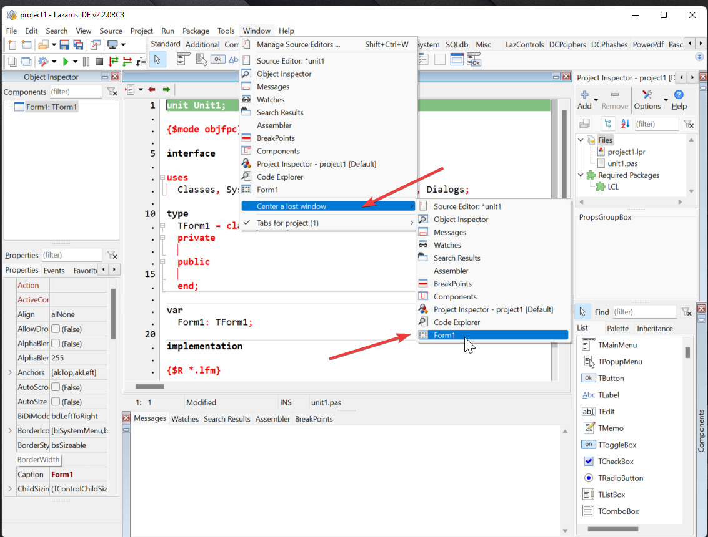

Se você escolheu não integrar o editor de formulários com a IDE,você deve saber se atentar a algumas coisas.
Ao fechar um projeto, a IDE salva as posições e dimensões das janelas do seu projeto. Acaso você mude de computador ou troque de monitor, ao abrir um projeto ele irá restaurar as janelas nas mesmas posições e dimensões, entendeu o problema? Não?
Então vamos lá, imagine que você está usando o computador do trabalho com 2 monitores e para sua comodidade você mantém a IDE no monitor esquerdo e o editor de formulários no monitor à direita e então salva seu trabalho e leva-o para casa...chegando lá abre o projeto e cadê os formulários?
Você se mata de apertar F12 e elas continuam desaparecidas, logo você conclui que o Lazarus tá com algum bug ou que a IDE/Linguagem não presta para trabalhar.
Vamos ao entendimento do problema, quando um projeto é salvo ele manterá as mesmas características para quando for aberto novamente então as janelas serão posicionadas na posição que estavam antes. O ambiente gráfico quando trabalha no modo de tela “estendido” com 2 monitores trata-o como "único desktop” e então é daí que vem o problema, as janelas não sumiram, apenas estão em posições a qual você não pode ver, no Windows se der ALT+Espaço (ou botão Visão no Windows 10+) as verá.
Como resolvo isso? Quando era ainda muito mais leigo no Lazarus eu usava ALT+Tab para selecionar a janela invisível e depois ALT+Espaço para movê-la com o teclado, depois descobri a opção ->Window->Center a lost window:
